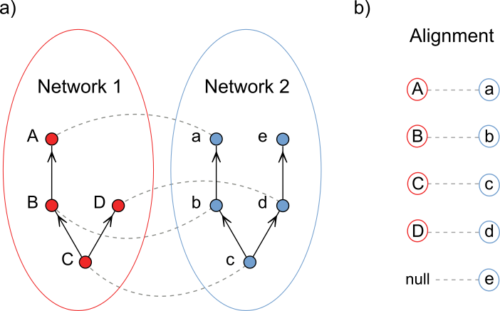

<div class="container">
<div class="d-flex flex-column justify-content-center">
    <div class="row justify-content-center" id="profile-col">
        <div class="col-sm-12 text-justify">
            <p class="gran"> 
We developed a new alignment technique to study the structure of biological systems. Given any pair of networks, our method maps their structures on top of each other by pairing similar nodes. As a result, we can identify analogous nodes across networks&#8212;i.e., nodes that play analogous roles. In this work, I use this alignment technique to understand dynamics and structure of ecological networks.
            </p>
        <br>
            
        </div>
    </div>
</div>
</div>

